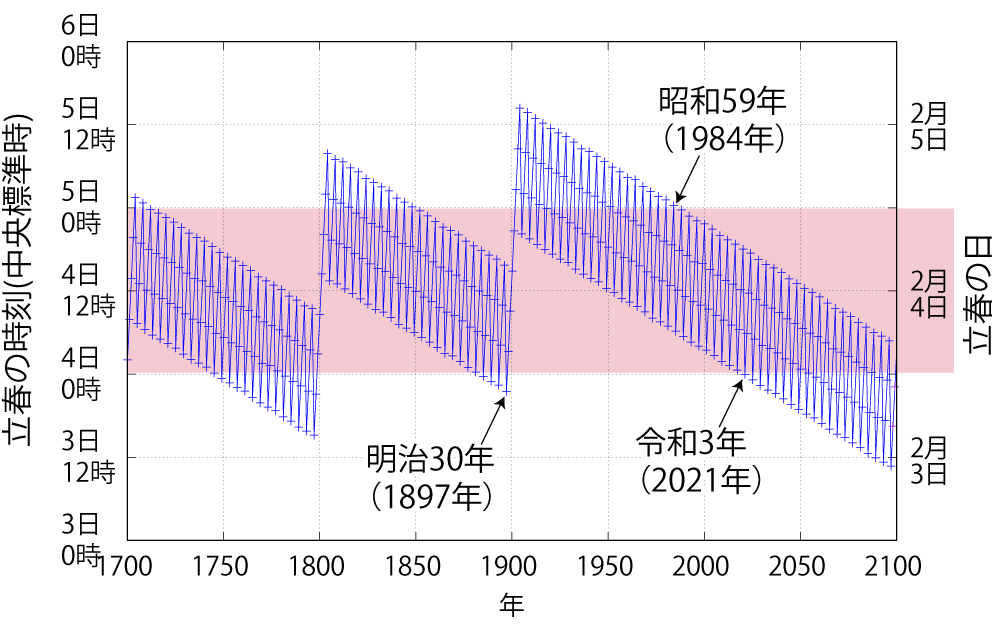

節分の狂躁

今回は過去に書いた節分・立春絡みの記事を再構成し，更にいくつか記事を足してお送りする。
立春も動き出す
「立春」は二十四節気のひとつで，現代の定義は「太陽黄経が315度になる瞬間を含む日」である。 春分点が黄経0度で冬至点が黄経270度（$\frac{3}{2}\pi = \frac{3}{4}\tau\,\mathrm{rad}$）で1，立春はその中間という感じ。 分かりやすい。

「節分」は元々は（暦上の）各季節の終わりにあったが，現代では雑節のひとつとして「立春の前日」と定義されている。 他の季節は（公式には）なくなっちゃったのね（笑）
今年は閏年の翌年ということで節分&立春が1日前倒しになっている。 これは前回の2021年からの傾向で少なくとも今世紀中は続く。 つか，だんだん2月3日が立春の年が普通になっていくんだけどね。

詳しくは4年前に書いた節分を参照のこと。
節分の狂躁
私の子供の頃は「恵方巻」を食べる習慣などなかったのだが，広島で独り暮らしをしている間に実家では定番行事になっていた。 まぁ，いまどき玄関にイワシの頭を飾る家のほうが珍しいのかもしれないが，えっと変わらんよね。
というわけでおつかいで近所のスーパーへ恵方巻を買いに行く。
つくづく馬鹿な風習だよな，と思う。 色街の下品なお遊び程度に留めておけばよかったのに（あれも「諸説」のひとつに過ぎないけどさ）。
恵方巻については以下の調査が面白い。
こうやって「
ちなみに今日の我が家の夕食は，買ってきた恵方巻と買い置きの出雲蕎麦と（従兄の畑でできた大根で）ふろふき大根。 あと正月からの飲み残しの「七冠馬」。 ハレの日だからね（笑）
おおごっつぉでした。
2025年の恵方
さて恵方巻といえば今年の恵方はどっち？ ということで。
「恵方」というのはその年の歳神様のおられる方位で，居住地から見て恵方にあたる社寺に詣ることを「恵方詣り」と言うらしいのだが，明治以降の鉄道の発達で長距離移動が容易になり，方位に依存する「恵方詣り」が廃れ，代わりに「初詣」が主流になっていったとのこと。 その一方で，節分の「恵方巻」みたいな文化が平成以降に台頭してくるのは面白い。
恵方はその年の十干で決定するらしい。

って，4方向を十干で分けるのか。 中途半端やなぁ。
拙作の github.com/goark/koyomi パッケージで指定した年の干支と恵方を取得できるようにした。
こんな感じ。
package main
import (
"fmt"
"github.com/goark/koyomi/zodiac"
)
func main() {
year := 2025
干, 支 := zodiac.ZodiacYearNumber(year)
fmt.Printf("%d年は%v%v，恵方は%v (%v°)", year, 干, 支, 干.DirectionJp(), 干.Direction())
}
これを実行すると「2025年は乙巳，恵方は西南西微西 (255°)」と出力される。 まぁ，ほぼ西。
というわけで，今年はほぼ西を向いてモグモグしましょう。 …ホンマ，馬鹿な風習だよな。
節分祭
昨日はまるっとオフだったので，いつものように八雲温泉へ行ったのだが，となりの熊野大社では既に一部で屋台が出ていた。
節分祭は翌日だというのに商魂たくましいというか。 栗まんじゅうをひとつ所望してしまった。
あぁ，糖分が染み渡る。
明けて今日。 午後から出掛けられそうなのだが，2日連続で熊野大社というのも芸がない。 そうだ。 佐太神社へ行ってみよう。
あれ？ いつもと変わらん？ いや境内まで行けば何かやってるかも知れんけど。 神事そのものには興味が薄いので2，スルーして道の駅でお茶した。
明日から春
明日から暦の上では春っスよ。 つっても4日から松江も氷点下予報だけどね。 光熱費高騰の折ではありますが，暖かくしてお過ごしくださいませ。
これでこっぽし。
ブックマーク
参考

- 鉄道が変えた社寺参詣 (交通新聞社新書)
- 平山昇 (著)
- 交通新聞社 2012-10-15 (Release 2015-12-07)
- Kindle版
- B0191845R0 (ASIN)
面白そうなのでポチってみた。これから読む。

- 神道入門 日本人にとって神とは何か (平凡社新書)
- 井上 順孝 (著)
- 平凡社 2006-01-12 (Release 2013-08-01)
- Kindle版
- B00EUVZHX0 (ASIN)
- 評価
Kindle 版登場。日本の神道の系譜が網羅的に書かれている。

- 反知性主義―アメリカが生んだ「熱病」の正体―（新潮選書）
- 森本 あんり (著)
- 新潮社 2015-02-20 (Release 2015-08-14)
- Kindle版
- B012VRLPRG (ASIN)
- 評価
アメリカの近代思想史または宗教史といった位置付けだろうか。

- プログラミング言語Go (ADDISON-WESLEY PROFESSIONAL COMPUTING SERIES)
- Alan A.A. Donovan (著), Brian W. Kernighan (著), 柴田 芳樹 (翻訳)
- 丸善出版 2016-06-20
- 単行本（ソフトカバー）
- 4621300253 (ASIN), 9784621300251 (EAN), 4621300253 (ISBN)
- 評価
著者のひとりは（あの「バイブル」とも呼ばれる）通称 “K&R” の K のほうである。この本は Go 言語の教科書と言ってもいいだろう。と思ったら絶版状態らしい（2025-01 現在）。復刊を望む！

- Canon コンパクトデジタルカメラ PowerShot ZOOM 写真と動画が撮れる望遠鏡 PSZOOM
- キヤノン (Release 2020-12-10)
- エレクトロニクス
- B08L4WKDZ7 (ASIN), 4549292179675 (EAN)
- 評価
望遠鏡型コンパクトデジカメ。メモリと充電器（要 Power Delivery）は別に用意する必要がある。使い勝手はまぁまぁ。

- ENEMOTI(エネモチ) お試し6本セット(クルミ餅×2・塩餅×2・甘酒餅×2) 【sotoasoオリジナルセット トレイルランニング ランニング 自転車 ロードバイク エンデュランススポーツ 登山 お餅 補給食 おいしい】
- Enemoti
- B08DFNBWBM (ASIN), 4589880507619 (EAN)
- 評価
糖質補給をメインにしたエナジーバー。三種入ったお試し用。 ACTIVIKE の中の人がオススメしていたので買ってみた。吸収がゆっくりなパラチノース配合。オブラートで包んであるので直接手に持って食べれる。私の好みとしては クルミ餅＞塩餅＞甘酒餅 かな。甘酒餅は粘りが強くて顎が鍛えられる（笑）

- 味の素 アミノバイタル ゼリードリンク SUPERSPORTS アップル味 100g×6個 アミノ酸 3000mg クエン酸 1200mg BCAA 栄養補給
- 味の素 (Release 2022-03-14)
- ヘルスケア&ケア用品
- B09TQLY5VZ (ASIN), 4901001564750 (EAN)
- 評価
長距離（つっても50km前後だが）サイクリング後の調整のために購入。飲みやすい。効果は... どうだろう。あるといいな（笑）

- 冬木透：交響詩ウルトラセブン on Brass
- 陸上自衛隊中央音楽隊／森次晃嗣／石村俊之／樋口孝博 (メインアーティスト)
- Nippon Columbia Co., Ltd. 2022-12-21 (Release 2022-12-21)
- MP3 ダウンロード
- B0BP9PNX2P (ASIN)
- 評価
2024年12月の冬木透さんの訃報に接し哀悼の意を表します。 mora で高解像度版が買える。ウルトラセブンはいつ聴いてもいい！

- 帰ってきたウルトラマン オリジナル・サウンドトラック〈ウルトラサウンド殿堂シリーズ〉
- 冬木透 (メインアーティスト)
- Nippon Columbia Co., Ltd. 2006-08-23 (Release 2021-07-28)
- MP3 ダウンロード
- B099ZXJWMV (ASIN)
- 評価
2024年12月の冬木透さんの訃報に接し哀悼の意を表します。 mora でロスレス版が買える。私は「帰ってきたウルトラマン」の世代なのよ。特に「MAT」が好き。ワンダバ！
作業中の BGV (メン限配信以外)
- おしゃべり唐あげあげ太くん 「遠回りの人生」 - YouTube
- ムーンライト / 星街すいせい covered by ReGLOSS 【歌ってみた / hololive DEV_IS】 - YouTube
- 晴る / ヨルシカ covered by ReGLOSS 【歌ってみた / hololive DEV_IS】 - YouTube
- 【雑談】「しらたきください」って言ったらはんぺん出てきたりLINEスタンプ考えたりする＋後半スパチャ読み【儒烏風亭らでん #ReGLOSS 】 - YouTube
- 追悼 ウルトラ音楽の父・冬木透先生 - YouTube
- Ultrasiete Concierto de Toru Fuyuki Ultraseven Concert 冬木透 CONDUCT ウルトラセブン - YouTube
- 【💬 #ピノまど観測所】生き物大好きお嬢様を観測せよ！ 実はサシの雑談コラボ、初めてです【カルロ・ピノ / 星見まどか】 - YouTube
- 【🌃 2月の星空案内】夜空に惑星たちが大集合！ ではあるけれども……🌟宇宙大好きVTuberが天文現象や星座の情報などをお届け！【星見まどか】 - YouTube
- 【#昭和100年歌枠リレー】いにしえの鬼が昭和の懐かしい名曲たちを歌います！【古代日本史VTuber きら子】 - YouTube